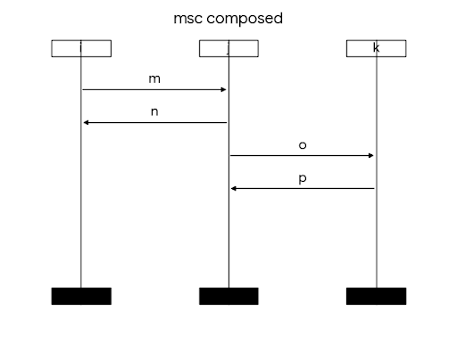
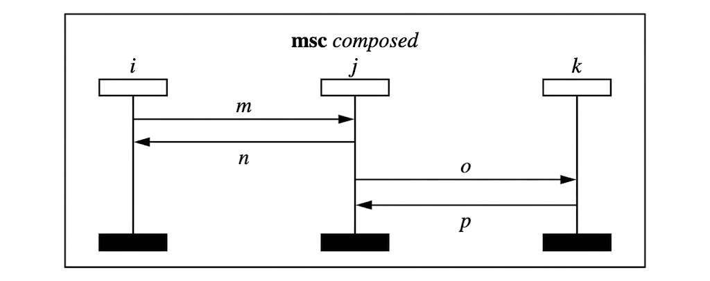

Experiments / Gemini 3 - Thinking / Example 6.docx
Question: Consider the following two message sequence charts labelled "first" and "second"; compose them horizontally and draw the resulting composed message sequence chart.

Answer:
To compose the message sequence charts (MSCs) first and second horizontally, we merge the shared process (lifeline $j$) and include the unique processes ($i$ and $k$) to create a single diagram with three lifelines.
Horizontal composition typically implies that the behaviors occurring on the different lifelines are concurrent, except where they are synchronized by shared processes or message exchanges. In this case, process $j$ is the common link.
Composed Message Sequence Chart
The resulting chart features the processes $i$, $j$, and $k$ side-by-side. The messages from both original charts are represented on their respective lifelines.
Python
import matplotlib.pyplot as plt
def draw_composed_msc():
fig, ax = plt.subplots(figsize=(8, 6))
# Process lifelines positions
x_i, x_j, x_k = 1, 3, 5
# Draw lifelines
for x, label in [(x_i, 'i'), (x_j, 'j'), (x_k, 'k')]:
ax.plot([x, x], [1, 9], color='black', linewidth=1)
# Top boxes
ax.add_patch(plt.Rectangle((x - 0.4, 8.5), 0.8, 0.5, fill=False, color='black'))
ax.text(x, 8.75, label, ha='center', va='center', fontsize=14, fontweight='bold', style='italic')
# Bottom boxes
ax.add_patch(plt.Rectangle((x - 0.4, 1), 0.8, 0.5, fill=True, color='black'))
# Draw Messages from 'first' (m and n)
# m: i -> j
ax.annotate('', xy=(x_j, 7.5), xytext=(x_i, 7.5),
arrowprops=dict(arrowstyle='-|>', color='black'))
ax.text((x_i + x_j)/2, 7.7, 'm', ha='center', fontsize=14, fontweight='bold', style='italic')
# n: j -> i
ax.annotate('', xy=(x_i, 6.5), xytext=(x_j, 6.5),
arrowprops=dict(arrowstyle='-|>', color='black'))
ax.text((x_i + x_j)/2, 6.7, 'n', ha='center', fontsize=14, fontweight='bold', style='italic')
# Draw Messages from 'second' (o and p)
# o: j -> k
ax.annotate('', xy=(x_k, 5.5), xytext=(x_j, 5.5),
arrowprops=dict(arrowstyle='-|>', color='black'))
ax.text((x_j + x_k)/2, 5.7, 'o', ha='center', fontsize=14, fontweight='bold', style='italic')
# p: k -> j
ax.annotate('', xy=(x_j, 4.5), xytext=(x_k, 4.5),
arrowprops=dict(arrowstyle='-|>', color='black'))
ax.text((x_j + x_k)/2, 4.7, 'p', ha='center', fontsize=14, fontweight='bold', style='italic')
# Title
ax.text(3, 9.5, 'msc composed', ha='center', fontsize=16, fontweight='bold', style='italic')
# Formatting
ax.set_xlim(0, 6)
ax.set_ylim(0, 10)
ax.axis('off')
plt.savefig('composed_msc.png', bbox_inches='tight')
plt.show()
draw_composed_msc()
Code output
has vm saved

The horizontal composition of MSC first and MSC second results in a single chart with three lifelines: $i$, $j$, and $k$. In this composition:
Lifeline $i$ retains its interactions from first (sending $m$ and receiving $n$).
Lifeline $j$ acts as the shared process, incorporating interactions from both charts.
Lifeline $k$ retains its interactions from second (receiving $o$ and sending $p$).
The final diagram illustrates all four message exchanges ($m$, $n$, $o$, $p$) integrated into a single system view.
Question: What is the order between sending m and receiving p in the composed diagram.
Answer:
I In the composed diagram, the event of sending $m$ occurs before the event of receiving $p$. This is determined by the happens-before relation ($\prec$), which defines a partial ordering of events in a distributed system or a Message Sequence Chart.
The causal chain that links these two events is as follows:
Message Causality: The event $send(m)$ on lifeline $i$ must happen before $receive(m)$ on lifeline $j$.
$send(m) \prec receive(m)$
Lifeline Ordering: On the shared lifeline $j$, events are executed sequentially from top to bottom. Since MSC first is composed with MSC second, the events from the first chart precede those of the second on the shared lifeline.
$receive(m) \prec send(o)$
$send(o) \prec receive(p)$ (or more specifically, $receive(m) \prec receive(p)$ via the sequence of events on $j$).
Transitivity: Because the "happens-before" relation is transitive, if $A \prec B$ and $B \prec C$, then $A \prec C$.
Since $send(m) \prec receive(m)$ and $receive(m) \prec receive(p)$, it follows that $send(m) \prec receive(p)$.
Summary of the Causal Path
The order is strictly enforced through lifeline $j$, which acts as the synchronization point between the two original charts. Without lifeline $j$ (if the two charts shared no processes), the events $send(m)$ and $receive(p)$ would be concurrent (unordered) because there would be no path of messages or lifeline sequences connecting them.
Question:
Please consider the original two MSCs labelled "first" and "second", given here again. Please compose them vertically (by putting "first" on top and "second" at the bottom). Please draw the resulting composed diagram.
Answer:

Question:
What is the order between receiving n and receiving p in the vertically-composed MSC.
Answer:
In the vertically composed Message Sequence Chart (MSC), the events receiving $n$ (on lifeline $i$) and receiving $p$ (on lifeline $j$) are unordered (or concurrent).
In formal terms, there is no "happens-before" relation ($\prec$) between these two specific events. Here is the breakdown of why:
1. The Principle of Weak Sequential Composition
Vertical composition of MSCs generally follows weak sequential composition. This means that when you place MSC second after MSC first, the temporal ordering is only enforced per lifeline.
On the shared lifeline $j$, the events from first must complete before the events from second begin.
However, events on different lifelines (like lifeline $i$ and lifeline $k$) are only ordered if there is a direct chain of messages or lifeline sequences connecting them.
2. Tracing the Causal Chains
To see if one event must happen before the other, we look for a path of arrows:
Path to Receiving $n$: $send(m) \text{ on } i \prec receive(m) \text{ on } j \prec \mathbf{send(n) \text{ on } j \prec receive(n) \text{ on } i}$
Path to Receiving $p$: $send(m) \text{ on } i \prec receive(m) \text{ on } j \prec \mathbf{send(n) \text{ on } j \prec send(o) \text{ on } j \prec receive(o) \text{ on } k \prec send(p) \text{ on } k \prec receive(p) \text{ on } j}$
3. Comparison
As shown in the paths above:
Both events share a common ancestor: $send(n)$ on lifeline $j$.
After $send(n)$ occurs, the system "splits." One path stays on lifeline $i$ to complete the reception of $n$. The other path continues on lifeline $j$ (and $k$) to process messages $o$ and $p$.
There is no message sent from lifeline $i$ after it receives $n$ that would signal lifeline $j$ to receive $p$.
Because neither event is a prerequisite for the other, they are logically concurrent. In a real-time execution, $receive(n)$ could happen before, after, or at the same time as $receive(p)$, depending on network latency and processing speeds.
.